Description:
Shared Tokens allows to swap tokens between accounts of another merchants or merchant's accounts.
For creating a Token Distributor follow the guide
Step 1 : Select a merchant for distributing
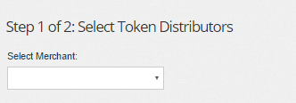
Next act is to select an account or all accounts of the merchant
For selecting all accounts of the merchant press checkbox 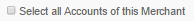
For selecting an account press 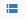
And select from the list
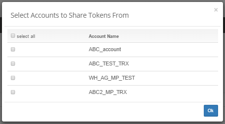
For deleting the distribution press 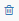
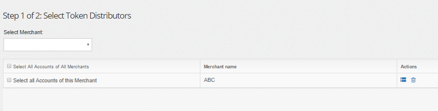
After set up the settings press the button 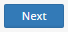
Step 2 : Select a merchant for consuming
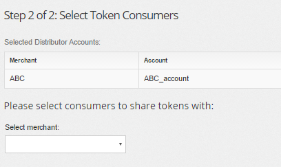
In step 2 make the same thing as in step 1 but only with consumers accounts.
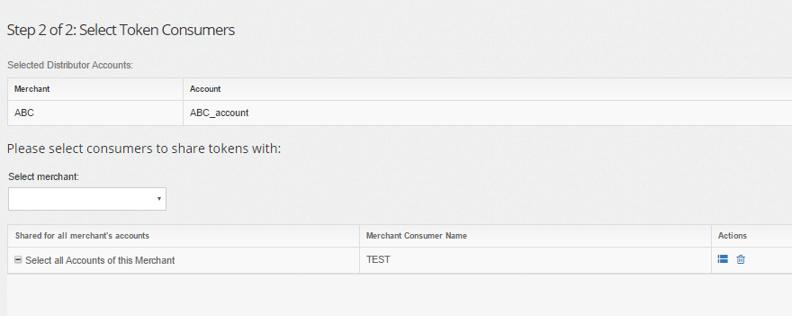
After set up the settings press the button 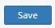
Description:
This section helps to find all Shared Tokens settings between merchant's accounts.
For searching add the rule 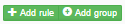
| Rule | Description |
|---|---|
| Gate | searching by name of the gate |
| Distributor Merchant | searching by Distributor Merchant |
| Distributor Account | searching by Distributor Account |
| Consumer Merchant | searching by Consumer Merchant |
| Consumer Account | searching by Consumer Account |
Note | You are able to select few rules.
After adding the rule press the button 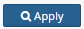
For creating a new Shared Token press the button 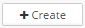
Example of searching
| Gate | Distributor Merchant | Distributor Account | Consumer Merchant | Consumer Account | Last update | Action |
|---|---|---|---|---|---|---|
| Test gate | ABC | ABC_account | TEST | qatest | 2016-09-23 16:14:13 | |
| Live gate | Merchant_live | Live_account | Merchant_live2 | Live_account2 | 2016-09-28 16:14:13 |
Details:
Update - allows to change the settings.
Delete - remove Shared Tokens settings.
Update
To make some changes click on conditions
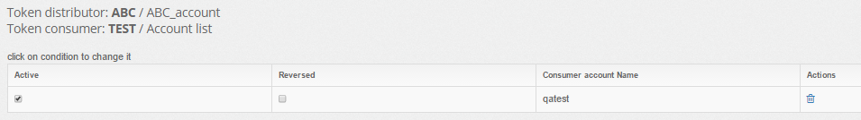
For deleting the Shared Token settings press